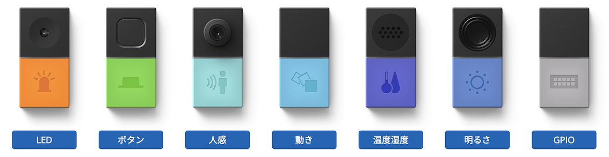
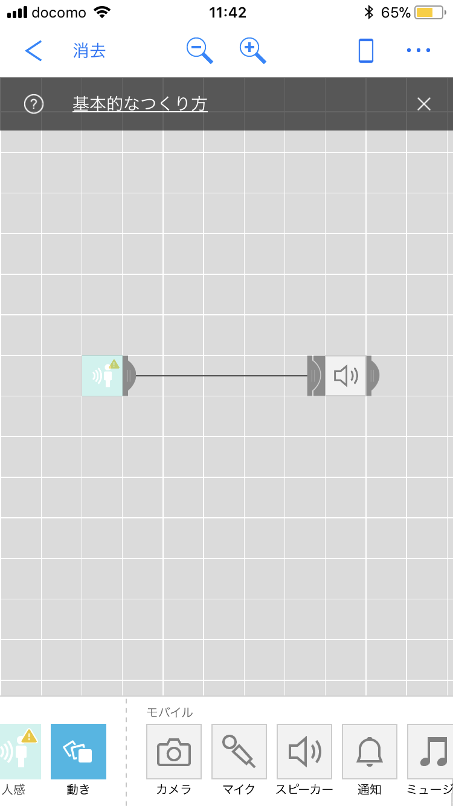
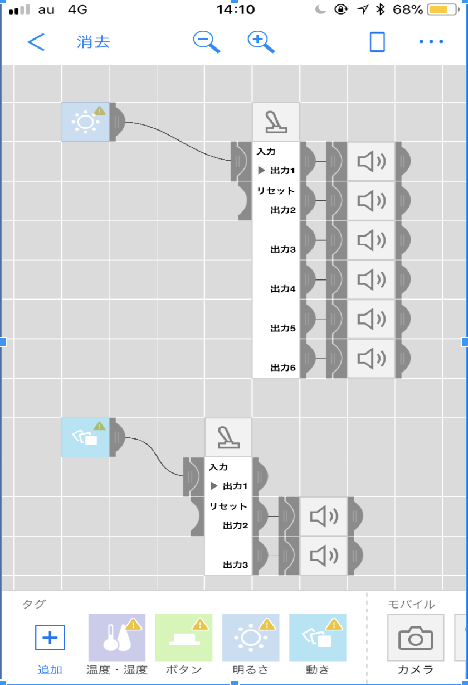
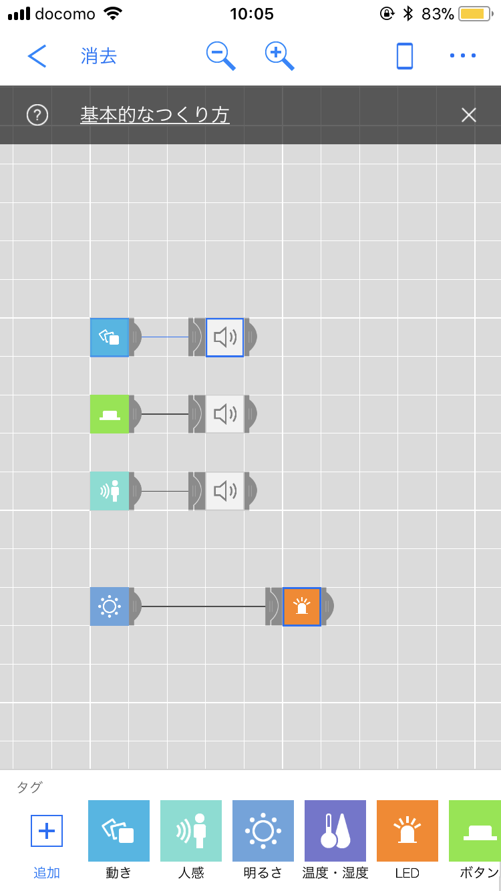

mindmap/mesh

班分けをした際に身体・ストリート班だった。ので表現に間することをmeshで表現したいと思い
meshを使いバンドを組むことにした。
1日目
痴漢撃退
まずは案出しから始めた
社会の問題解決したいと思い、meshを使って痴漢撃退をすることに

ズボンのポケットにmeshを入れ人に触れられたらセンサーが感知して音声が流れるというもの。
気づいたこと
・故意で触れて居ないのにセンサーが起動してしまい他の人に迷惑がかかる
・冤罪が増えてしまいそう
改善点
・感度の微調整ができたら良い
・まずこの世から痴漢を無くす
考えているうちにこの班は身体・ストリート班ということを忘れており
社会問題よりも自分たちの好きな音楽や表現することを考えることにした。
meshを使ったパフォーマンス
人の動き→絵の具が落ちる（人感センサー）→音がなる
ライブペインティングを行おうとした。

ここで考えられたこと
・人感センサーの反応が鈍い
・欲しいタイミングで反応してくれない
・構造が少しややこしい
改善点
・構造を簡単にする
・感度の微調整
などを考えているうちに授業が終了してしまった為、次の日に改善点を踏まえて行くことにした。
2日目
meshを使ったパフォーマンス②
先日行ったことの改善を踏まえながらも新しいことにチャレンジすることにした。
meshを使ったパフォーマンス、先日はライブペインティング今回は同じ表現のバンドを組むことにした。

前回よりも簡単な構造にし
動きセンサーが起動→ギター
ボタンを押す→ベース
人感センサー→にわとりの鳴き声 という前回よりも簡単な構造にした。
やってみて
・前回よりもやりやすかった
・meshを使ってバンドをして行くことが増えるなら、持ち運びが便利で狭い場所でもできる
・初心者でもできるので誰もが楽しめる
・思いついて練習せずすぐ撮ったので雑音まみれだったけどうまくいけば本当のバンドみたいな音が出ると考えれた
こうやって新しい表現が広がっていけば良いと思った